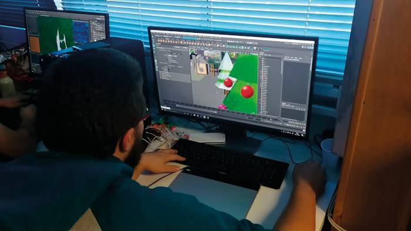

Développeur jeu video
Qu’est-ce qu’un Développeur de jeu video, quelles sont ses missions ?

En maîtrisant les techniques de codage, un développeur ou une développeuse de jeux vidéo est un personnage essentiel dans la création d’un jeu. Engagé à tous les niveaux auprès de l’équipe de production, il/elle donne vie au jeu. Ce qui demande au programmeur de jeu vidéo une appétence pour l’informatique et des qualités pour travailler à plusieurs.
Ses missions principales ?
- À partir du cahier des charges, le programmeur travaille sur n’importe quel support en important l’ensemble des éléments transmis par les équipes de production. Interfaces, menus, volets sonores et vidéo, tout y passe. L’objectif final étant de maintenir une cohérence du jeu et d’en assurer la performance et l’optimisation.
- Dans un premier temps, un programmeur devra analyser les besoins informatiques du jeu.
- Il en écrira le programme
- Tester et corriger le programme.
- Enfin, une veille technologique permanente est indispensable afin de rester à jour par rapport aux multitudes d’innovations du secteur et de maîtriser les solutions les plus efficaces du marché